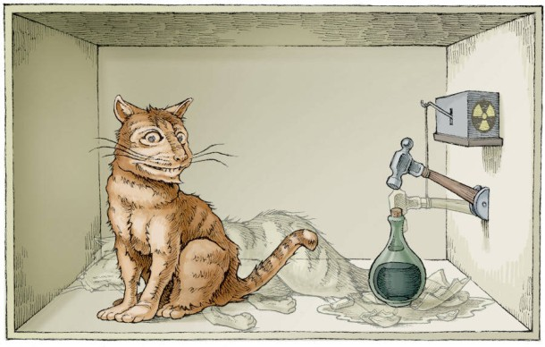

* 2,
wird gleichzeitig mit allen Varianten der beiden Qubits (also 00, 01, 10 und 11)
gerechnet.
* 2,
wird gleichzeitig mit allen Varianten der beiden Qubits (also 00, 01, 10 und 11)
gerechnet.
Aus der heutigen Welt ist Kryptographie fast nicht mehr wegzudenken - ob beim Senden von Nachrichten auf Social Media, beim Zugriff auf das World Wide Web oder bei der Bezahlung auf Online-Plattformen, Verschlüsselung versteckt sich in unserem Alltag überall.
Um so bedrohlicher wirkt eine kommende Technologie, die die Grundlagen vieler Kryptographischen Verfahren bedroht: Quantencomputing.
In diesem Paper werden zuerst die grundlegenden Konzepte und Funktionsweisen des Quantencomputings erklärt. Im zweiten Teil folgt dann eine Einführung in die Grundlagen der Kryptographie, ehe Gefahren durch Quantencomputing und mögliche Post-Quantum Kryptographie diskutiert werden.
— Link zu den Files & der Präsentation —
https://drive.google.com/drive/folders/1qzwYTCk7gxU0-I_943sJvX31GOQdxpMH?usp=drive_link
Kryptographie - die Disziplin, Verfahren zu entwickeln, um Nachrichten verschlüsseln und
entschlüsseln zu können, und somit eine sichere Übertragung zu gewährleisten - blickt auf
eine lange Geschichte zurück.
Schon der römische Feldherr Julius Cäsar erkannte die Relevanz darin, Nachrichten
verschlüsselt - und damit sicherer und geheim - zu übertragen. [?] Mehr als 2000 Jahre
später, während des ersten Weltkriegs, verschlüsselte die deutsche Wehrmacht ihre
Nachrichten mit der Verschlüsselungsmaschine Enigma. Zum Glück schaffte es ein
britisches Team von Mathematikern rund um Alan Turing, dessen Verschlüsselung zu
brechen und somit Informationen zu erhalten, die maßgeblich zum Sieg der Aliierten
beitragen konnten. [?]
Aus der heutigen Welt ist Kryptographie fast nicht mehr wegzudenken - ob beim
Senden von Nachrichten auf Social Media, beim Zugriff auf das World Wide Web oder bei
der Bezahlung auf Online-Plattformen, Verschlüsselung versteckt sich in unserem Alltag
überall.
Um so bedrohlicher wirkt eine kommende Technologie, die unsere momentane
Kryptographie erheblich verändern könnte: Quantencomputing.
Aktuelle Verschlüsselungsmethoden, die oftmals auf mathematischen Problemen
basieren, die konventionelle Computer nur mit immens viel Zeit und Ressourcen lösen
können, könnten von sogenannten Quantencomputern theoretisch in wenigen Sekunden
geknackt werden.
In diesem Paper werden zuerst die grundlegenden Konzepte und Funktionsweisen des Quantencomputings erklärt. Im zweiten Teil folgt dann eine Einführung in die Grundlagen der Kryptographie, ehe Gefahren durch Quantencomputing und mögliche Post-Quantum Kryptographie diskutiert werden.
Quantencomputing ist ein Konzept, das mittlerweile nicht mehr ausschließlich in
Wissenschaftlichen Kreisen diskutiert wird sondern durchaus im Mainstream angelangt
ist.
Heutzutage hat wahrscheinlich jeder Mensch von Quantencomputern gehört, die schneller,
besser und futuristischer als klassische Computer sein sollen. Der klassische Gedanke, den
viele beim Thema Quantencomputing haben, ist folgender:
"Quantencomputer sind ähnlich wie klassische Computer, aber Bits können nicht nur die Werte 0 oder 1 annehmen sondern auch alle Werte dazwischen."
Das ist natürlich eine stark vereinfachte Aussage, die im Grunde genommen auch nicht komplett korrekt ist. Ziel des folgenden Kapitels über Quantencomputing ist, zu erklären was klassische Computer und Quantencomputer wirklich unterscheidet und einen Einblick in die spannendsten Konzepte, die Quantencomputing erst ermöglichen, zu geben.
Die Funktionsweise eines klassischen Computers ist mittlerweile relativ bekannt.
Klassische Computer sind vereinfacht gesagt viele tausende in Serie geschaltete logische
Operatoren. Die meisten logischen Operatoren sind binär: Sie nehmen 2 Bits, einen
Datentyp der nur die Werte 0 und 1 annehmen kann, als Input und geben nach gewissen
Regeln einen Bit, also entweder 0 oder 1, aus. [?]
Da der Computer auf Bit basiert, führt er Berechnungen auch nicht in unserem
Zehner-System durch: Aus der Rechnung 99 + 76 macht der Computer 01100011 +
01001100. Jede Berechnung führt dabei zu einem Ergebnis. 99 + 76 ergibt 175 und keine
andere Zahl. Dieser Punkt mag jetzt noch überflüssig wirken, er wird aber bei der
Diskussion des Quantencomputers wichtig werden.
Klassische Computer sind Turing-Vollständig. Das bedeutet: Alles, was berechenbar
ist, lässt sich von einem klassischen Computer berechnen, solange man ihm genug Zeit
und Resourcen gibt. [?] Diese Tatsache hat eine wichtige Folge:
Ein Quantencomputer kann nicht mehr Probleme lösen als ein klassischer Computer, er
kann unter Umständen allerdings dieselben Probleme schneller lösen.
Quantencomputer ähneln in vieler Hinsicht klassischen Computern, unterscheiden sich allerdings schon auf der Bit-Ebene von ihnen:
Im Gegensatz zu klassischen Computern ist die kleinste Informationseinheit in
Quantencomputern kein Bit, sonder ein sogenanntes Qubit. Das Wort Qubit setzt sich
dabei aus den Wörtern Quantum und Bit zusammen. [?] Wie Qubits genau funktionieren,
wird in einem späteren Kapitel erklärt.
Auch bei Quantencomputern werden viele sogenannte quantum logic gates in Serie geschaltet, was die Berechnung von beliebig komplexen Dingen ermöglicht. Außerdem sind Quantencomputer ebenfalls Turing-Vollständig. [?]
Um Qubits zu verstehen, muss man zuerst das Phänomen verstehen, das man als
"Kernstück"der Quantenmechanik bezeichnen könnte: Die Superposition.
Im Bereich der Quantenphysik verhalten sich Objekte anders, als Objekte in unserem
Alltag. Am besten sieht man dieses Verhalten am berühmten Doppelspalt-Experiment, das
erstmals 1802 von Thomas Young durchgeführt wurde. Dabei wurde beobachtet, dass sich
Photonen, die so wie auch Qubits mikroskopisch kleine Quantenmechanische
Objekte sind, ohne beobachtet zu werden in einer Superposition befinden. [?]
Superposition bedeutet, dass sich das Quantensystem in mehreren Zuständen
gleichzeitig befindet. Abbildung 1 zeigt das Gedankenexperiment von Schrödingers Katze:
In einer verschlossenen Box wird ein Atomkern platziert, der jeden Moment zerfallen
könnte. Sobald der Atomkern zerfällt, wird eine Maschine ausgelöst, die eine Katze - die
sich ebenfalls in der Box befindet - tötet. Solange wir das System beobachen, ist immer
klar ob Schrödingers Katze lebendig oder tot ist. Verschließen wir die Box allerdings wird
der Atomkern nicht mehr beobachtet und befindet sich in Superposition - er ist
gleichzeitig intakt und zerfallen, und die Katze gleichzeitig lebendig und tot.
[?]

Erst wenn wir wir eine Messung am System durchführen, also in die Box hineinschauen, entscheidet sich der Atomkern, ob er intakt oder zerfallen ist. Man spricht hierbei vom Kollaps der Superposition [?].
Das zweite wichtige Phänomen der Quantenphysik ist die Verschränkung. Wenn zwei oder
mehr Quantenmechanische Systeme verschränkt sind, hängen ihre Zustände fundamental
zusammen. [?]
Auch dieses Phänomen kann man sich gut am Beispiel Schrödingers Katze vorstellen.
Hierbei bilden Katze und Atomkern ein verschränktes System: Der Zerfall des Atomkerns
und der Tod der Katze hängen zusammen - es kann nicht nur einer der beiden Ereignisse
eintreten.
Wo genau der Quantenbereich aufhört und der Bereich der normalen Physik beginnt ist Wissenschaftlern noch heute nicht ganz klar. Eine Sache ist jedoch sicher: Qubits fallen in den Bereich der Quantenphysik und zeigen dadurch die beiden eben erwähnten Eigenschaften.
Die wichtigste Erkenntnis um Quantencomputing zu verstehen ist, dass sich auch Qubits
bevor sie gemessen werden in Superposition befinden. Qubits befinden sich also
gleichzeitig im Zustand 0 und 1, und man kann mit ihnen auch in Superposition rechnen.
[?]
In Tabelle 1 stellt das Symbol (Theta) ein Qubit dar. Benutzt man
zwei miteinander Verschränkte Qubits in einer Rechnung, wie hier in * 2,
wird gleichzeitig mit allen Varianten der beiden Qubits (also 00, 01, 10 und 11)
gerechnet.
| * | 2 | = | ? | |
| — | — | — | — | — |
| 00 | * | 2 | = | 000 |
| 01 | * | 2 | = | 010 |
| 10 | * | 2 | = | 100 |
| 11 | * | 2 | = | 110 |
Man beachte hierbei allerdings, dass man sich das Ergebnis der Berechnung * 2
nicht als Liste vorstellen darf! Wie bereits im Kapitel zur Superposition erklärt, existieren
all diese Zustände nur dann parallel, wenn wir sie nicht messen. Wenn man hier eine
Messung am Ergebnis durchführen würde, würde man zufällig eine der möglichen
Antworten (000, 010, 100, 110) zurückbekommen.
Tatsächlich ist es uns nicht möglich, mehr als eine Lösung aus einer Quanten-Berechnung
zu bekommen. In einem späteren Kapitel wird jedoch an einem konkreten Beispiel ein
Algorithmus gezeigt werden, mit dem wir uns andere nützliche Informationen aus unserer
Lösungsmenge zurückgeben lassen können.
Ein riesiger Vorteil von Quantencomputing fällt sofort auf: Mit einem Qubit können zwei Berechnungen gleichzeitig durchgeführt werden, mit 2 Qubits 4 und mit 3 Qubits schon 8. Ein n-Qubit Quantencomputer kann Berechnungen gleichzeitig durchführen. Dieses exponentielle Wachstum bedeutet, dass für die Lösung einiger komplexer Probleme schon einige tausend Qubits ausreichen könnten. [?]
Wie bereits erwähnt beschäftigt sich die Kryptographie damit, Verfahren zu entwickeln
um Nachrichten verschlüsseln und entschlüsseln zu können und damit eine sichere und
geheime Übertragung von einem Sender zu einem Empfänger zu gewährleisten.
Die unverschlüsselte Nachricht wir dabei Plaintext genannt, die verschlüsselte
Nachricht Cyphertext. Man nimmt dabei an, dass unerwünschte Lauscher dabei
Zugriff auf Übertragungskanäle - und somit auch auf den Cyphertext haben. Die
Herausforderung bei der Kryptographie liegt also nicht darin, Übertragungswege oder
Verschlüsselungsverfahren geheim zu halten, sondern darin, einen möglichst schwer zu
brechenden Schlüssel zu verwenden. [?]
Man geht zusätzlich davon aus, dass Drittparteien nur beschränkte Ressourcen zur
Verfügung stehen um abgefangene Cyphertexte zu entschlüsseln. Kann ein Schlüssel von
aktuellen Computern erst in 100.000 Jahren gebrochen werden, kann man davon
ausgehen, dass er sicher ist. [?]
Mit immer besser werdenden klassischen Rechnern reicht es meist, einfach den
Schlüssel einer Kryptographischen Methode länger zu machen um eine vergleichbare
Sicherheit zu gewährleisten. Nicht aber mit Quantencomputing. Während das
brechen von RSA-Schlüsseln mit klassischen Computern mehrere Millionen Jahre
dauern würde, könnte ein Quantencomputer das selbe in wenigen Sekunden
schaffen.
Wir unterscheiden generell zwei Arten der Kryptographie: Symmetrische & Asymmetrische Kryptographie. In den folgenden zwei Unterkapiteln werden diese zwei Arten vorgestellt und erklärt.
Symmetrische Kryptographie ist die allgemein bekanntere und einfacher zu verstehende
der beiden Varianten. In der symmetrischen Kryptographie verwenden Sender und
Empfänger denselben geheimen Schlüssel und denselben kryptografischen Algorithmus,
um Daten zu verschlüsseln und zu entschlüsseln.
Ein einfaches Beispiel dafür ist der sogenannte Shift-Cipher. Bei diesem werden die
Buchstaben im Plaintext einfach um eine gewisse Anzahl an Buchstaben (zu
Demonstrationszwecken genannt z) verschoben. Wenn z = 3 ist, wird so A zu D, B zu E
und so weiter. Diese spezifische Art der Verschlüsselung ist eine der ältesten uns
bekannten kryptographischen Methoden. Der Römische Feldherr Julius Caesar
nutzte das System mit z = 3, sein Nachfolger Augustus dann mit z = 4. [?]
Symmetrisch ist diese Art der Kryptographie deshalb, weil Sender und Empfänger
dieselben Informationen benötigen, in unserem Beispiel die Anzahl der verschobenen
Buchstaben, um zu verschlüsseln beziehungsweise entschlüsseln.
Symmetrische Verschlüsselungsmethoden eignen sich hervorragend zum verschlüsseln von Daten, allerdings gibt es ein großes Problem: Beide Parteien müssen den Schlüssel kennen. In früheren Zeiten war das kein Problem, da Kryptographie großteils dem Militär und der Politik vorbehalten war, doch heutzutage wäre das arbeiten mit solchen Methoden in vielen Fällen undenkbar:
Wenn Person A Person B über das Internet eine Nachricht schickt, können sie sich nicht einfach auf einen gemeinsamen Schlüssel einigen. Dieser müsste zuvor entweder über einen unverschlüsselten Kanal geschickt werden, was die Sinnhaftigkeit der Verschlüsselung wesentlich einschränken würde, oder persönlich übergeben werden, was wiederum Vorteile durch Digitalisierung und des Internets zunichte machen würde. Es brauchte also neue Methoden, und genau diese liefert die asymmetrische Kryptographie. [?]
Bei der Asymmetrischen Kryptographie, oft auch Public-Key Kryptographie genannt,
werden zum ver- und entschlüsseln nicht derselbe Schlüssel verwendet. Stattdessen
besitzt jeder Nutzer mehrere Private-Keys, die er selbst kennt, und aus der mit
Rechnungen ein öffentlich sichtbarer Public-Key berechnet wird. Ein Sender kann eine
Nachricht dann zwar mit dem Public-Key des Empfängers verschlüsseln, um den
Cyphertext dann wieder zu entschlüsseln werden aber die Private-Keys benötigt. [?]
Asymmetrische Kryptographie funktioniert hauptsächlich deswegen, weil manche
Probleme rechnerisch nur in sehr langer Zeit lösbar sind. Ein gutes Beispiel ist die
public-Key Verschlüsselungsmethode RSA. Bei RSA (benannt nach dessen Erfindern
Rivest, Shamir und Adleman) sind die Private-Keys x und y riesig große Primzahlen. Der
Public-Key z wird einfach durch Multiplikation der beiden Private-Keys berechnet. [?]
Diese Methode ist deshalb so beliebt, da die Berechnung des Public-Keys extrem
einfach ist, es auf der anderen Seite aber fast unmöglich ist, die Private-Keys aus
dem Public-Key zu schließen. Das liegt an der Schwierigkeit, riesige Zahlen in
ihre Primfaktoren zu zerlegen. Es ist Mathematisch bewiesen, dass selbst die
besten Algorithmen für die Primfaktorzerlegung großer Zahlen ewig brauchen.
Tabelle 2 zeigt die größte Zahl, die jemals in ihre Primfaktoren zerlegt wurde: RSA-250. Zehntausende Rechner arbeiteten 2019 bis 2020 mehrere Monate lang weltweit an der Berechnung - nach etwa 2700 CPU-Jahren wurde dann eine Lösung gefunden. [?] [?]
| 641352894770715802787901901705773890848250 |
| 147429434472081168596320245323446302386235 |
| 98752668347708737661925585694639798853367 |
| 244624208838318150567813139024002896653802 |
| 092578931401452041221336558477095178155258 |
| 218897735030590669041302045908071447 |
| = |
| 124620366781718784065835044608106590434820 |
| 374651678805754818788883289666801188210855 |
| 036039570272508747509864768438458621054865 |
| 537970253930571891217684318286362846948405 |
| 301614416430468066875699415246993185704183 |
| 030512549594371372159029236099 |
Wie man also sieht sind aktuelle Verschlüsselungsmethoden durchaus noch sehr sicher.
Heutzutage werden bei der RSA-Verschlüsselung auch meist größere Schlüssel als 250
Zeichen genutzt, was sie in realistischer Zeit unknackbar macht.
Ein ausreichend großer Quantencomputer könnte allerdings die Sicherheit, gerade von
Asymmetrischen Algorithmen erheblich verringern. Diese basieren wie erwähnt auf
Problemen, die auf konventionellen Computern schwer zu lösen sind, die aber durch die
parallele Rechenleistung von Quantencomputern immens beschleunigt werden könnten.
Tabelle 3 zeigt die Sicherheit von Verschlüsselungsmethoden vor und nach dem Quantencomputer. Die oberen vier Methoden sind Symmetrische Verschlüsselungsverfahren. Man sieht dass ihre Sicherheit nach dem Erscheinen eines Quantencomputers von einem sicheren Wert über 80 sofort auf 0 abstürzt. Die unteren beiden Verfahren sind Symmetrische Verschlüsselungsmethoden. Sie werden zwar nicht so stark durch Quantencomputing betroffen, AES-128 aber rutscht auf ein Sicherheitslevel unter 80, was als unsicher gilt. [?]
| Sicherheitslevel mit... | ||||
| Algorithmus | Typ | Länge | klassischen Rechnern | Quantencomputern |
| RSA-1024 | Symm. | 1024 Bit | 80 | 0 |
| RSA-2048 | Symm. | 2048 Bit | 112 | 0 |
| ECC-256 | Symm. | 256 Bit | 128 | 0 |
| ECC-384 | Symm. | 384 Bit | 256 | 0 |
| AES-128 | Asymm. | 128 Bit | 128 | 64 |
| AES-256 | Asymm. | 256 Bit | 256 | 128 |
Wie bereits im Kapitel Quantencomputing erwähnt, besteht die Schwierigkeit im Lösen
von Problemen mit dem Quantencomputer darin, geeignete Algorithmen zu finden, die
nützliche Daten aus der Lösungsmenge filtern können. Der wohl wichtigste Algorithmus
in der jungen Geschichte des Quantencomputings ist Shor’s Algorithmus. [?]
Mit Shor’s Algorithmus kann die Primfaktorzerlegung großer Zahlen, die auf
tausenden klassischen Computern tausende CPU-Jahre brauchen würde, auf einem
Quantencomputer in wenigen Sekunden durchgeführt werden. Der Algorithmus arbeitet
wiefolgt: [?]
Sei N die Nummer, die faktorisiert werden soll
Wähle x, sodass 1 < x < N - 1
Rechne x hoch 0, 1, ..., N
Dividiere x0,x1,...,xN durch N und speichere den Rest
In den Resten ergibt sich eine periodische Sequenz. Extrahiere die Periodendauer p mit der Quanten-Fourier-Transformation
Überprüfe, ob F = xp∕2-1 ein Faktor ist. Wenn nicht, wiederhole mit anderem x.
Da dieser Algorithmus sehr abstrakt und weit entfernt von üblichen verfahren ist,
erkannt man auch bei mehrmaligem lesen nicht, wie er funktionieren soll. Aus diesem
Grund wird der Algorithmus im folgendenden mit einem Beispiel vereinfacht erklärt:
Sei die Zahl, die Faktorisiert werden soll N = 15. Wir sehen natürich sofort, dass 15
das Produkt aus den Primzahlen 3 und 5 ist. Nun wenden wir Shor’s Algorithmus an, um
hoffentlich zum selben Ergebnis zu kommen.
Wir wählen nach den oben beschriebenen Regeln x = 2. Für alle 0 ≤ n ≤ N berechnen
wir 2n und anschließend 2n mod N. Tabelle 4 zeigt anschaulich einige Ergebnisse dieser
Rechnungen.
| Rechnungen | 20 | 21 | 22 | 23 | 24 | 25 | 26 | 27 | ... |
| Ergebnis 2n | 1 | 2 | 4 | 8 | 16 | 32 | 64 | 128 | ... |
| Ergebnis 2n mod 15 | 1 | 2 | 4 | 8 | 1 | 2 | 4 | 8 | ... |
Es fällt sofort auf, dass sich die Zahlenfolge 1 - 2 - 4 - 8 immer wieder wiederholt. Man
muss allerdings wieder bedenken, dass uns diese Lösungsmenge nicht zugänglich ist.
Würden wir jetzt eine Messung am System vornehmen, würden wir völlig zufällig
entweder 1, 2, 4 oder 8 als Ergebnis bekommen, was uns nicht weiterhilft.
Wie Bereits im Kapitel über das Quantencomputing angekündigt, gibt es allerdings
eine Möglichkeit, sich Informationen aus periodischen Lösungsmengen zu holen: Mit der
sogenannten Quanten-Fourier-Transformation können wir die Frequenz (bzw.
Periodendauer) des Auftretens einer bestimmten Zahl in dieser Lösungsmenge
bestimmen. Da für jedes x gilt, dass x0 = 1, wissen wir, dass die 1 sicher in unserer
Lösungsmenge, und damit sicher periodisch vorkommt - also machen wir eine
Quanten-Fourier-Transformation auf die Zahl 1. Diese gibt uns als Periodendauer
p = 4 zurück.
Nun können wir x = 2 und p = 4 in die Formel F = xp∕2 - 1 einsetzen. Berechnung
von F = 24∕2 - 1 ergibt F = 3. Nach der Überprüfung stellen wir fest, dass 3 tatsächlich
ein Primfaktor von 15 ist. Damit haben wir erfolgreich eine Primfaktorzerlegung mit
Shor’s Algorithmus durchgeführt. [?] [?]
Diese lange Berechnung mag für N = 15 zwar unnötig kompliziert wirken, wie aber bereits erwähnt wächst die Rechenleistung mit größerer Anzahl Qubits exponentiell, wodurch der zusätzliche Aufwand an Qubits je größer die Zahl wird geringer wird.
Da die meisten heute genutzten Public-Key Algorithmen entweder wie RSA aud der
Primfaktorisierung oder auf diskreten Logarithmen basieren, die beide leicht von Shor’s
Algorithmus gebrochen werden können, würden mit dem Bau eines ausreichend großen
Quantencomputers alle Asymmetrischen Kryptographie-Verfahren unsicher werden. Das
Faktorisieren einer 1024-Bit RSA Verschlüsselung würde einen etwa 2000 Qubit fassenden
Quantencomputer benötigen.
Es gibt noch einen weiteren Algorithmus, Grover’s Algorithmus, der auch die
Sicherheit von Symmetrischen Algorithmen verringert. Wie allerdings zuvor in Tabelle 3
zu sehen bleiben diese, solange sie groß genug sind im allgemeinen sicher. [?]
Schon jetzt könnten verschlüsselte Daten gesammelt und gespeichert werden, die mithilfe eines Quantencomputers in der Zukunft in kürzester Zeit entschlüsselt werden könnten. In Folge dessen sind neue Algorithmen gefragt, die nicht so leicht von Quantencomputern gebrochen werden können.
Es wird bereits jetzt an neuen mathematischen Ansätzen für Asymmetrische
Kryptographische Methoden gearbeitet, die Quantensicher sein sollen. Diese sollen zum
Beispiel statt auf Primfaktorisierung auf Matrixmultiplikationen, Multivariten Polynomen
oder Hashing-Algorithmen basieren. [?]
Ein Nachteil, den sich die meisten dieser neuen Algorithmen teilen, ist dass viel
größere Schlüssel als zuvor notwendig sind. Der neu entwickelte Algorithmus NTRU
braucht für ein Sicherheitslevel von 128-Bit einen 12881-Bit langen Schlüssel, RSA-2048
kommt für ähnliche Sicherheit mit 2048 Bit aus.
Eine weitere Möglichkeit für erhöhte Sicherheit ist die Verwendung von symmetrischen
Algorithmen mit längeren Schlüsseln.
Auch mit der Quantenmechanik selbst wird in Zukunft die Sicherheit von Daten gewährleistet werden können. Zum Beispiel kann erkannt werden, ob eine verschickte Quanten-Nachricht von einer Drittperson abgehört wurde, da dann sofort die Superposition kollabieren würde.
Desweiteren Funktioniert die Verschränkung von Qubits völlig unabhängig von ihrer Entfernung. So könnten zwei Quantencomputer an unterschiedlichen Standorten theoretisch miteinander Verschränkt sein und somit Daten ohne wirklichen "Übertragungsweg"übertragen werden. [?]
Quantencomputer werden auf uns zukommen und die Welt der Kryptographie, und damit
auch unseren Alltag fundamental verändern.
Während Einrichtungen, die mit Symmetrischen Algorithmen arbeiten können mit
ausreichend langen Schlüsseln weiterhin sicher sind, ist gerade die Privatsphäre von
Privatnutzern, die auf Asymmetrische Kryptographie vertrauen müssen, gefährdet.
Aus diesem Grund ist es wichtig, dass schon vor dem ersten großen Quantencomputer
an neuen, quantensicheren Algorithmen und Verschlüsselungsmethoden gearbeitet wird.
Zum Glück wurden mit einigen Ansätzen schon erste Durchbrüche in Richtung
Quantensicherheit gemacht, die sich ohne Zweifel in Zukunft noch weiter Verbessern
werden.
Bei weiterem Interesse ist der im IJACSA erschienene Artikel The Impact of Quantum Computing on Present Cryptography [?] zu empfehlen. Dieser geht noch etwas weiter in die Themen Quantencomputing und Post-Quanten-Algorithmen ein.
Referenz zu anderen Publikationstypen: [?] [?]